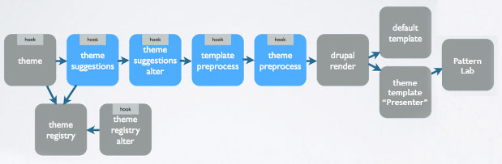

Getting Atomic with Pattern Lab
Who am I?
Aaron Froehlich
- Technical Lead, ILR School at Cornell
- a-fro (d.o)
- a-fro.com
- @aaronfroehlich
- aaronf@cornell.edu
- Husband, father, builder
Who am I?
Aaron Froehlich
- Technical Lead, ILR School at Cornell
- a-fro (d.o)
- a-fro.com
- @aaronfroehlich
- aaronf@cornell.edu
- Husband, father, builder
Where are we going?
Search for the Holy Grail

Search for the Holy Grail

Where have we been?
Enter…
PHP… CMS… MVC… Templating… jQuery…


Where are we now?
From pages..


“A set of objects governed by rules.”
—Aaron Froehlich


How do we solve these problems?
Existing projects - Interface inventory
New projects - Styleguide

Demo Umami Quicktour
Umami
Umami
Enter Pattern Lab
Umami Pattern Lab
Enter Drupal
What gets rendered?
- fields
- nodes
- blocks
- views
- forms
- entities (i.e. paragraph bundles)
- layouts
- media
Theme Render Pipeline

Theme Render Pipeline with Pattern Lab
Theme Render Pipeline with Pattern Lab
{# @see core umami theme template for block--bundle--banner-block.html.twig #}
{% set banner_img_src
= content.field_banner_image.0['#item'].entity.uri.value %}
{% set link = content.field_content_link|field_value[0] %}
{% include "@molecules/recipe-banner/recipe-banner.twig" with {
"banner_image_output_image_tag": TRUE,
"banner_img_src": banner_img_src|image_style('scale_crop_7_3_large'),
"banner_img_alt": content.field_banner_image.0['#item'].alt,
"banner_title": content.field_title|field_value,
"banner_summary": content.field_summary|field_value,
"banner_link_url": link['#url'],
"banner_link_text": link['#title']
}%}
Where do I make my pattern again?
-
fields ·
nodes ·
blocks ·
views ·
forms ·
entities ·
layouts ·
media ·
Examples
Further Resources and Frontiers
- Drupal Twig Slack: https://drupaltwig-slack.herokuapp.com
- Emulsify.info
- Mark Conroy's blog: https://mark.ie
- My blog: a-fro.com
- Bolt Design System - PL with webcomponents